01 工业指挥台
安全驾驶舱
从待复核批次进入追溯。结构图和尺寸是示意，数量是版式样例。
工作台路由 / · 接口 GET /overview/dashboard
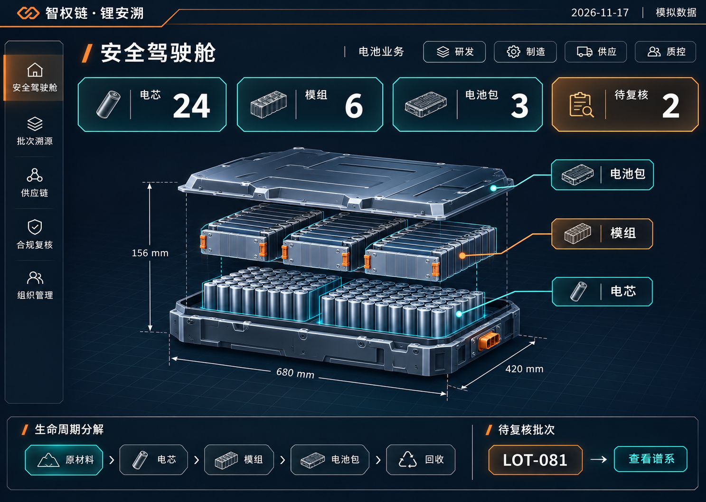
02 电池数字护照
电池数字身份
先读厂商、产品和材料编码，再查看建档、生命周期和受控健康信息。编码通过校验与资产已建档是两个状态。
工作台路由 /identity · 接口 GET /codes/:code · GET /batteries/:code · GET /batteries/:code/lifecycle · GET /batteries/:code/health
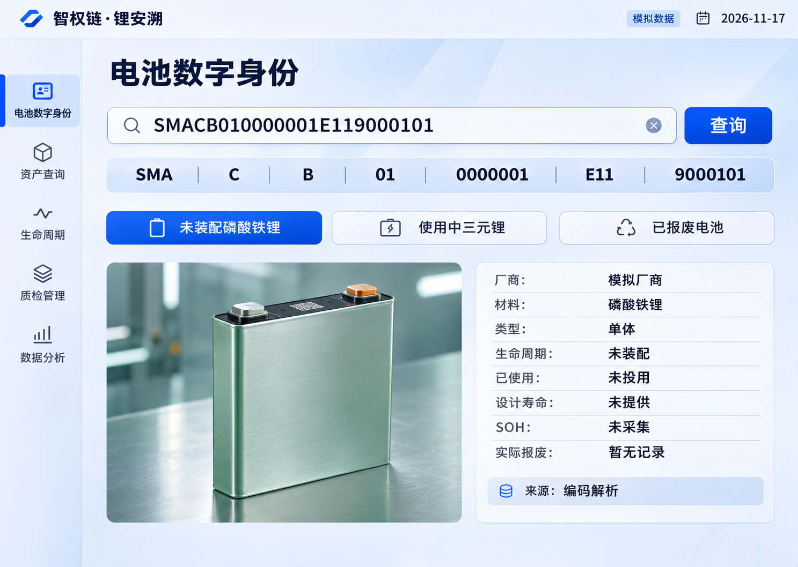
02b 电池数字护照 · 投用
使用中三元锂电池
样例 DMAPE010000001E112521111。首次投用为 2024-07-01，图中使用时长按演示日 2026-11-17 取整月至 2 年 4 个月。设计寿命为厂商规格，当前接口未提供经过验证的剩余寿命预测。
工作台路由 /identity · 接口 GET /batteries/:code/lifecycle · GET /batteries/:code/health
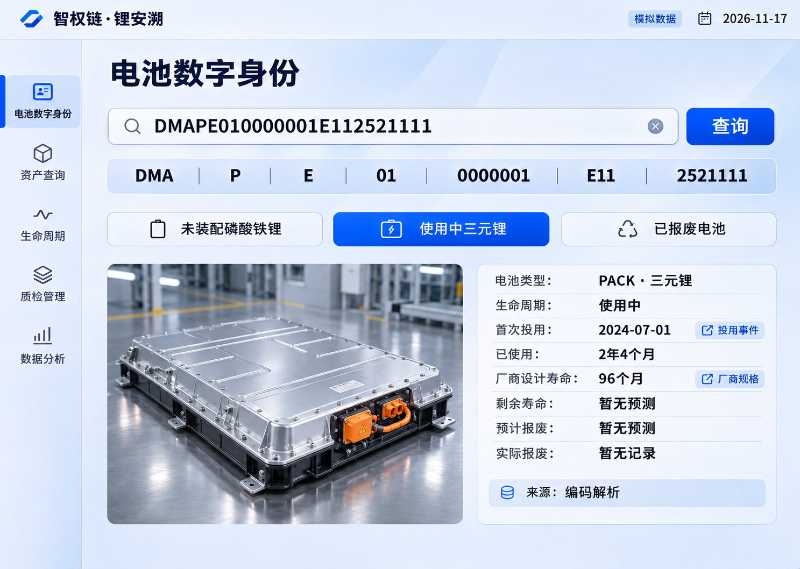
02c 电池数字护照 · 报废
已报废动力电池
样例 DMAPB010000001E112521114。退役、回收接收、确认报废分别发生在 11 月 1、2、3 日；最后一个事件给出实际报废日期。
工作台路由 /identity · 接口 GET /batteries/:code/lifecycle · GET /assets/:id/history
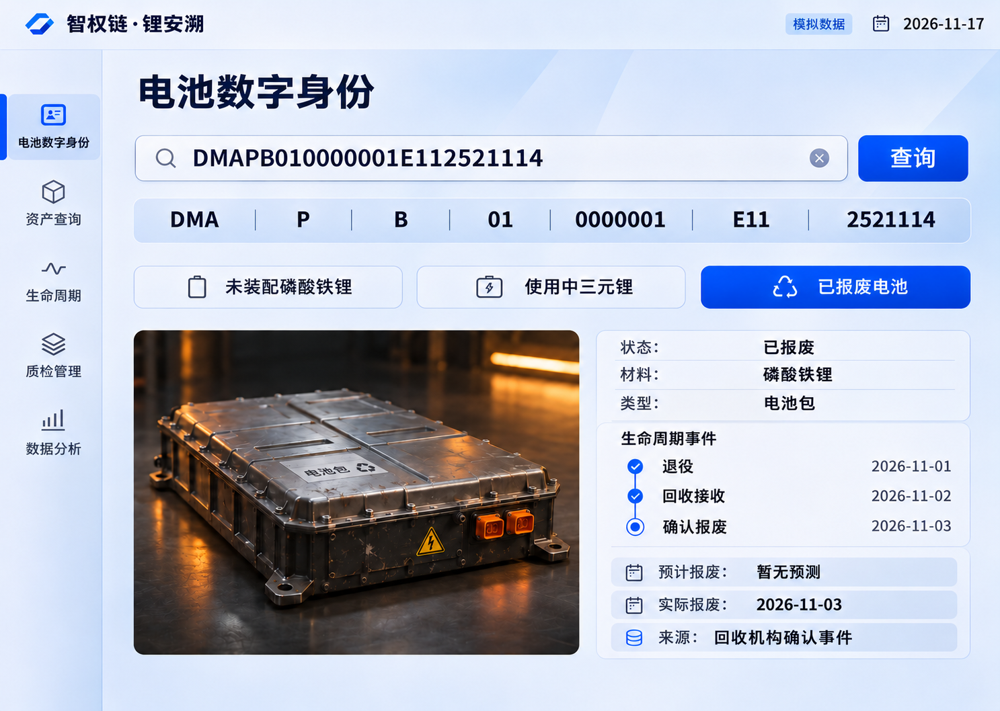
03 精密计量工作台
质量检测中心
点开偏离样本群的电芯，结合报告版本进行人工复核。图中 Ah 和 mΩ 由原始字段 mAh 和 μΩ 各除以 1,000 展示。
工作台路由 /inspections · 接口 GET /overview/inspections · POST /imports/measurements · GET /reports/:id/content
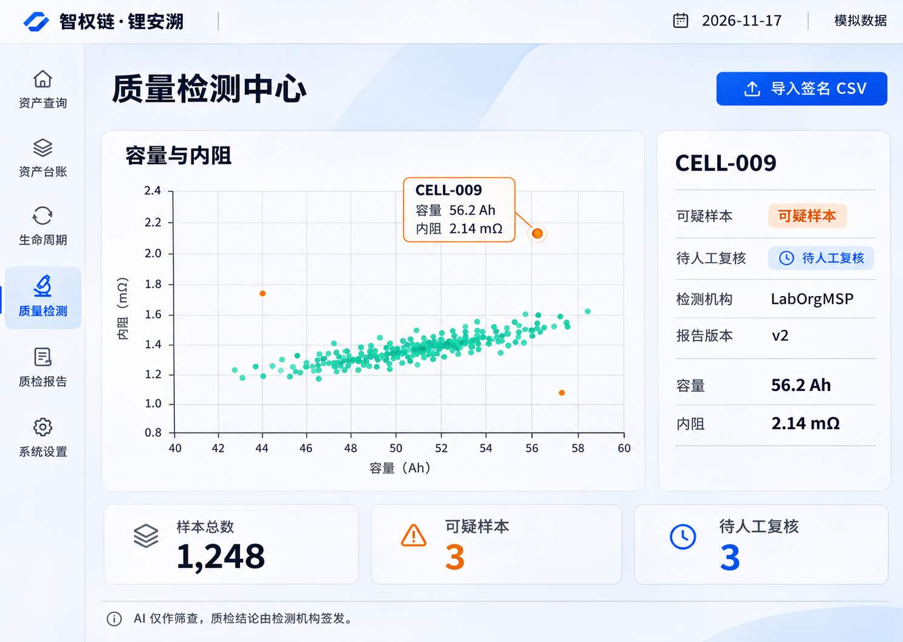
04 装配工程蓝图
电池谱系追溯
从批次沿装配边找到电芯、模组和受影响的 PACK。当前装配与历史装配分别对应接口的 current 和 historical。
工作台路由 /trace · 接口 GET /trace/batch/:id · GET /assets/:id/assembly-history
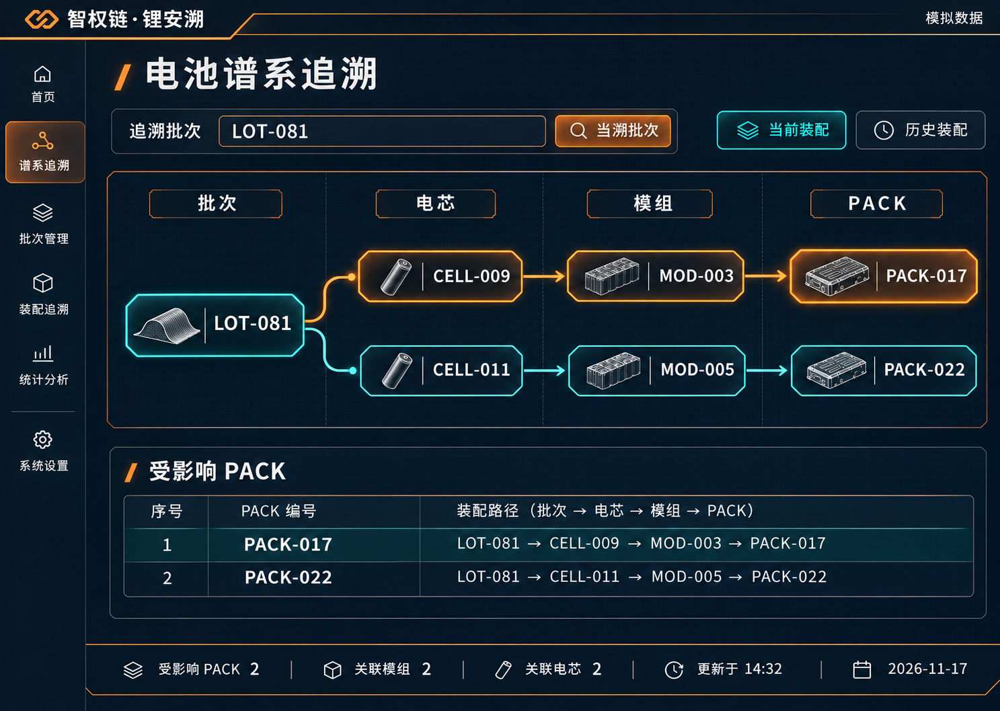
05 组织会签卷宗
联合审批中心
围绕一张放行单展示风险凭证、快照和签章进度。所需签章按该申请的 requiredOrgs 渲染。
工作台路由 /approvals · 接口 GET /overview/releases · POST /release/requests
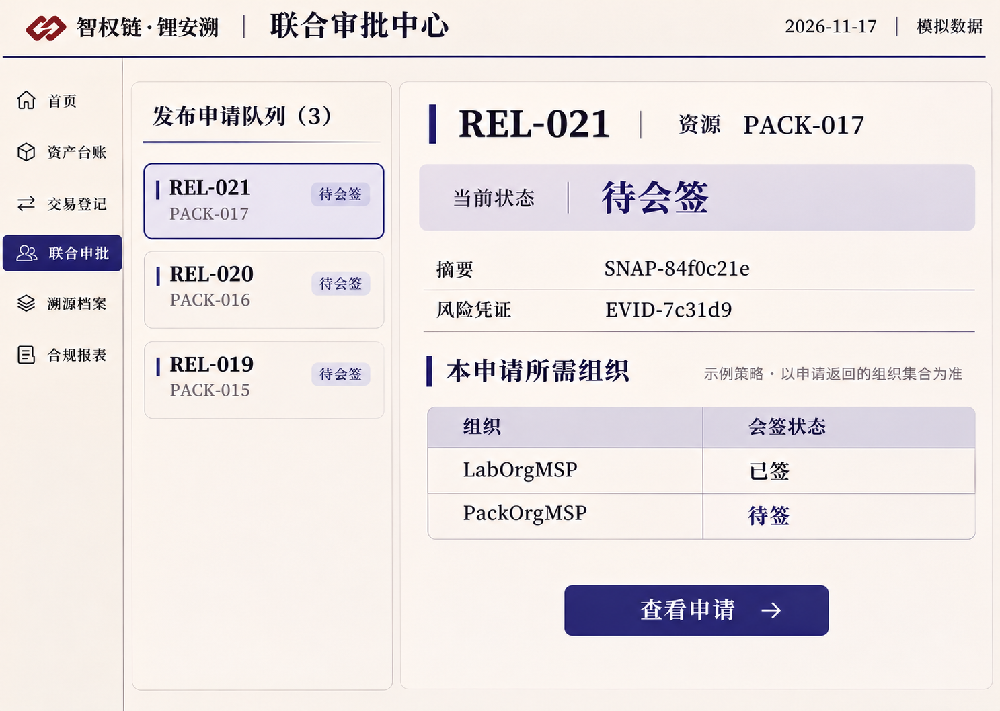
06 双联交接单
企业交接管理
同一资产在转出、接收两侧对齐。待签收时，持有人仍为转出方。
工作台路由 /transfers · 接口 GET /overview/transfers · POST /commands/:resource
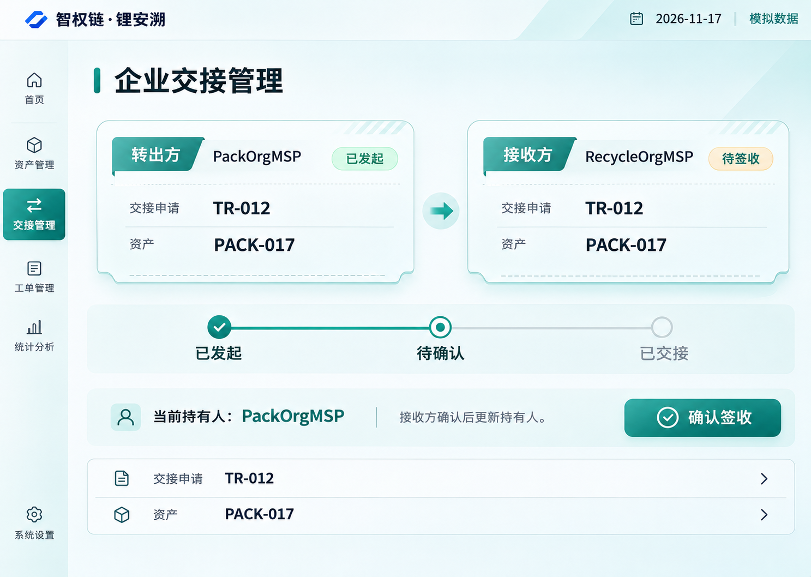
07 组织协作分析图
AI 风险分析
沿审批箭头找到短时互批的两个组织。操作风险提示触发复核；电芯质量筛查和检测结论另行展示。
工作台路由 /risk · 接口 POST /api/bff/risk/operations → POST /operations/analyze · GET /api/bff/risk
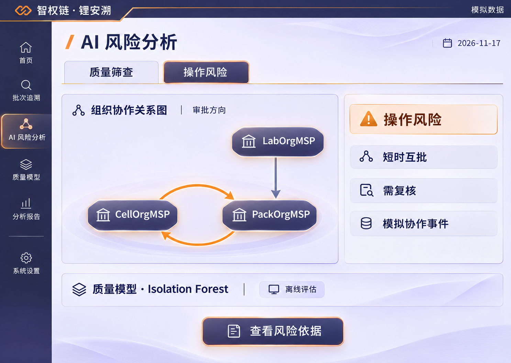
08 策略版本对照
安全策略管理
并排阅读生效策略和候选策略。移除审批组织的差异与预演结果一起展示。
工作台路由 /policies · 接口 GET /policies/current · POST /policies/previews
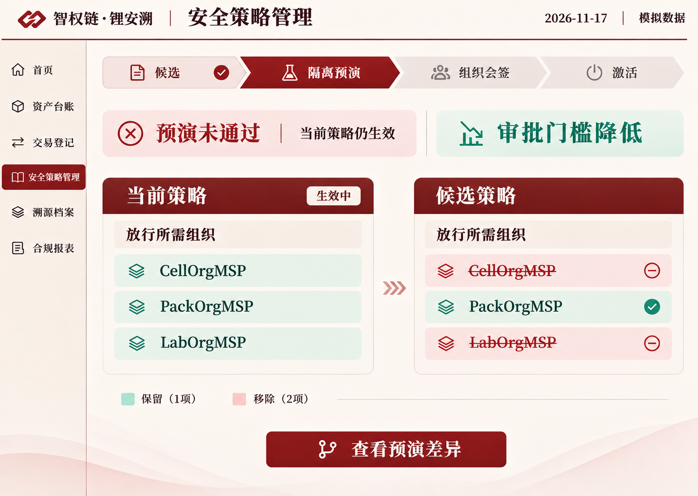
09 防护结果回放
安全攻防实验室
以质量门禁为例，对照阻断原因、业务状态和网关证据。此处为静态回放示意。
工作台路由 /lab · 接口 POST /api/bff/lab/run
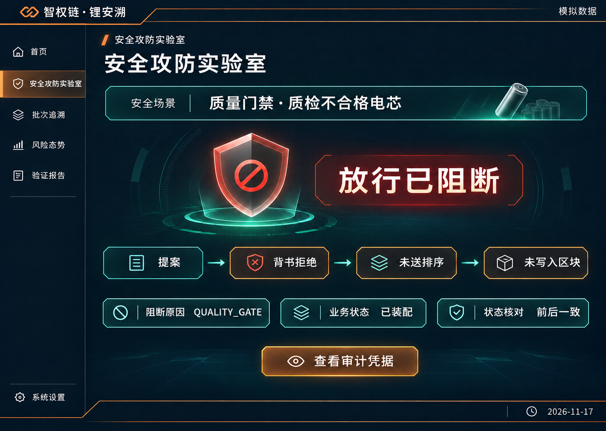
10 审计证据簿
区块链审计中心
以 requestId 关联交易阶段和安全日志。背书拒绝的业务请求没有新区块，安全日志摘要可以随后独立锚定。
工作台路由 /audit · 接口 GET /overview/audit · GET /transactions/:requestId
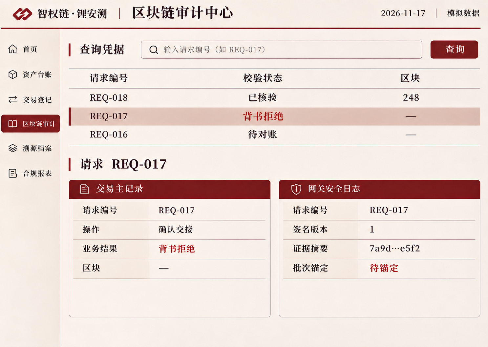
11 四组织联盟图
组织与权限管理
从联盟通道找到电芯制造、装配、检测、回收四个组织，再查看角色职责。
工作台路由 /organizations · 接口 GET /overview/dashboard · GET /api/bff/session
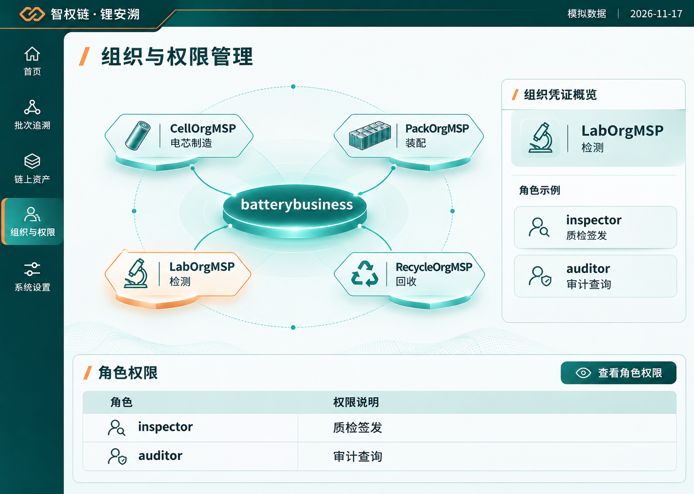
设计依据为项目书 V2.1 第十一、十二章及项目工作台和服务端源码。图中数据、局部导航与按钮用于静态演示；接口以页眉标注为准。NestJS 路径省略 /api/v1，/api/bff 路径为工作台接口，/operations/analyze 为风险服务接口。